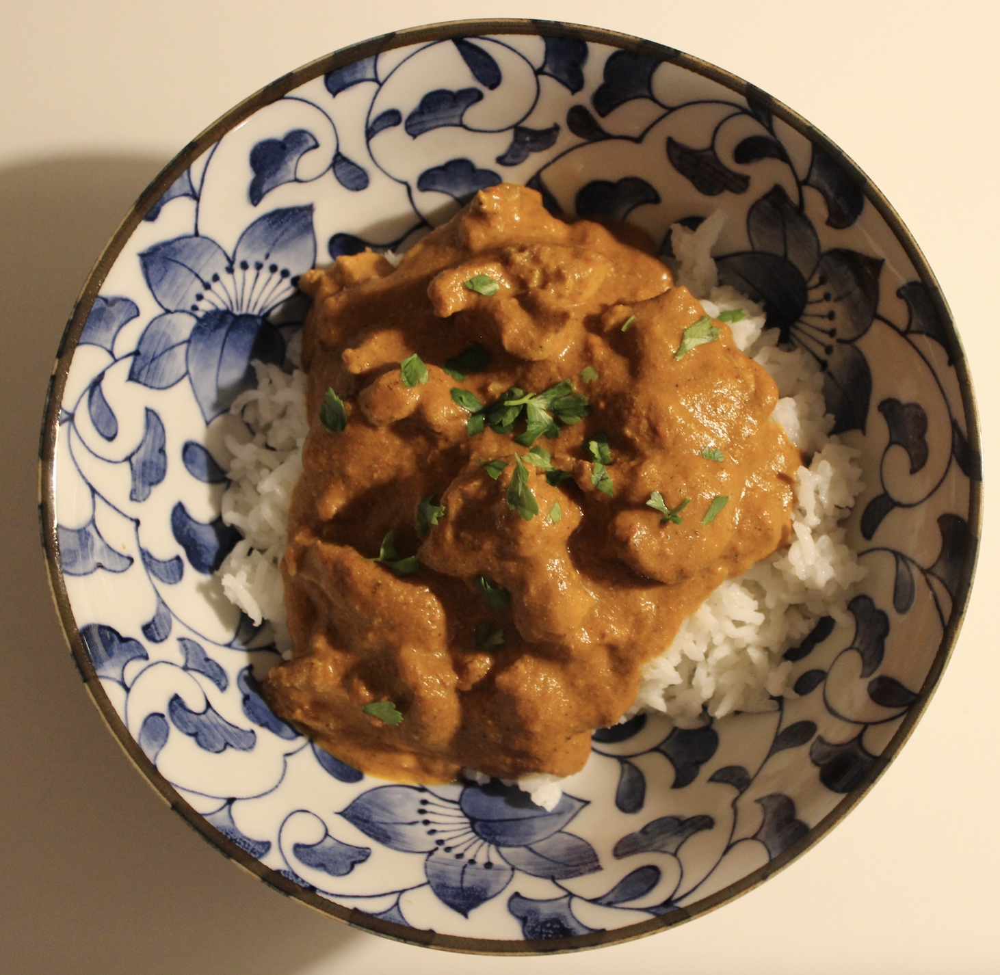

ABOUT
Cooking that fits real life.
Every recipe in Common Table is something I genuinely cook. The focus isn't just high protein or low calories—it's creating meals that are nutritious, affordable and worth making again.

Browse by Cooking Style
⚡ Weeknight Meals
Fast, nutritious meals designed for busy schedules and meal prep.
Meal Prep Friendly🍽 Single Night Meals
Fresh dinners cooked and eaten the same night.
Quick & Fresh🍲 Sunday Meals
Slow cooked meals with deep flavour and leftovers.
Slow CookFeatured Recipes
Search by recipe name, ingredient, or vibe.
Search Results
🍛 Chicken Tikka Curry
Rich, creamy curry with marinated chicken thighs.
High Protein
Gamberi Aglio e Olio (Prawn Pasta)
Juicy prawns tossed through a silky lemon, garlic and chilli butter sauce.
Quick
Pad Kee Mao (Drunken Noodles)
Wok-fried rice noodles with chicken, vegetables and a bold Thai-inspired sauce.
30 min
🍚 Teriyaki Chicken Poke Bowl
Fresh rice bowl with teriyaki chicken, crunchy vegetables and a glossy homemade sauce.
Fresh